The group of [4 + 2] cycloaddition reactions referred to as the Diels-Alder reaction constitute one of the most versatile and widely used synthetic methods. Stripped to its most basic components, this reaction is represented by the addition of 1,3-butadiene to ethene shown below. The standard state thermodynamic functions for this reaction may be calculated from the heats of formation and entropies of the components.
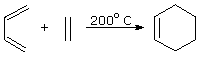
The exothermic nature of this reaction is the result of converting two weak π-bonds into two stronger σ-bonds. The large negative entropy reflects the change from two independent reactant molecules to one product molecule, and the necessity of fixing the diene in a cisoid conformation. Both impose increasing order on the system. Because the entropy factor opposes the enthalpy change, the calculated ΔGº is smaller than ΔHº by 298*ΔSº/1000, but it still represents a strongly exergonic reaction. Despite the favorable overall energy change, this reaction has a substantial free energy of activation, and requires heating to take place. At 200 ºC the TΔSº component increases to 20.6 kcal/mole, but ΔGº remains a strongly exergonic -19.4 kcal/mole. The calculated equilibrium constant favoring cyclohexene at this temperature is therefore greater than 1012. Functional substituents on the dienophile or diene reactants often lower the activation barrier, and in some cases spontaneous [4 + 2] additions may occur. Examples include: 1,3-butadiene + maleic anhydride, 1,3-cyclopentadiene + propenal, and 1,3-cyclohexadiene + dimethyl acetylenedicarboxylate.
It is interesting to note that a commercial process for preparing 1,3-butadiene consists of passing gaseous cyclohexene over a red hot metal coil (ca. 900 ºC), as shown in the following equation.
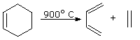
This is the reverse of the Diels-Alder cycloaddition, and the thermodynamic functions for this reaction will have opposite signs to those defined above. Using these standard state functions, the success of this procedure can be explained. At 900 ºC (1173 ºK) the entropy component is larger than the enthalpy component, so the ΔG for the decomposition is an exergonic -11.1 kcal/mole. This is equivalent to an equilibrium constant of 108, favoring the desired butadiene, which is easily separated from ethene thanks to its higher boiling point (-4.5 ºC ). It should be noted that ΔH and ΔS are not constant at all temperatures, but do not normally suffer large changes.
A similar Diels-Alder system that is more easily studied is the dimerization of 1,3-cyclopentadiene shown below. The ΔHº for this reaction is almost 10 kcal/mole lower than that of the butadiene + ethene addition, reflecting strain in the tricyclic product. The ΔSº, on the other hand, is roughly 10 eu less negative as a result of the fixed cisoid orientation of the diene.
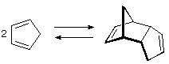
ΔHº = -18.4 kcal/mole ΔSº = -34 cal/ ºK mole ΔGº = -8.3 kcal/mole kcal/mole
ΔH‡ = +15 kcal/mole ΔS‡ = -32 cal/ ºK mole ΔG‡ = +24.5 kcal/mole kcal/mole
At room temperature cyclopentadiene slowly dimerizes, the exergonic ΔGº corresponding to an equilibrium constant of 106 in favor of the dimer. The ΔG‡ prohibits immediate reaction, but a sample of pure cyclopentadiene at room temperature slowly dimerizes over a week or two. Consequently, the short shelf life of the synthetically important monomer demands that it be freshly prepared just before it is used in a reaction. This is easily accomplished by heating the dimer to just below its boiling point (170 ºC) and collecting the lower boiling monomer (b.p. 42 ºC) as it is formed. Although the ΔG for dimerization is still negative at 170 ºC (-3.3 kcal/mole), it has been substantially lowered by the TΔSº factor, permitting a significant equilibrium concentration of the monomer to be achieved.
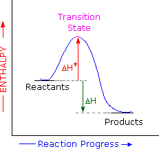
The availability of activation parameters for this reaction makes it possible to explore further details of the reaction path. The stereospecificity of the Diels-Alder reaction implies a single step transformation, and the exothermic character of the reaction requires an enthalpy profile similar to that shown on the right. The Hammond Postulate, which uses ΔHº as an indicator, suggests that the transition state would resemble the reactants more than the products. However, the similar magnitude and sign of ΔSº and ΔS‡ requires the transition state to have a structure very similar to the dimer product. This disagreement is a warning that the Hammond postulate was intended to be used for reaction profiles involving high energy intermediates., and is probably inappropriate for single step reactions such as SN2 substitutions and the Diels-Alder cycloaddition.
A cheletropic reaction has been defined as a process in which two sigma bonds which are directed to a single atom of a ring are made or broken concertedly. The number of pi-bonds decrease or increase by one, depending on the direction of the reaction (ring-forming or ring-opening). An example is the reversible addition of sulfur dioxide to 1,3-butadiene shown here.
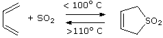
ΔHº = –16.5 kcal/mole
The direction taken by this reaction depends upon the temperature. Below 100º C the equilibrium favors the addition product, the standard heat of reaction being –16.5 kcal/mole. Above 100º C the cyclic sulfone decomposes to 1,3-butadiene. The equilibrium constant is close to unity at 100º C. If we assume this is true, the entropy change is easily calculated using the equations:
ΔGº = – RTlnK = – 2.303RTlogK
ΔGº = ΔHº – TΔSº
Since ΔG = 0 when Keq = 1, ΔSº = – 16,500/373 = – 44.24 cal/ ºK mole. At 25º C the ΔGº = -3.3 kcal/mole, corresponding to a Keq = 270.
The reaction of carboxylic acids and alcohols to form esters is one of the best known transformations in organic chemistry. The preparation of ethyl acetate outlined in the following equation is a typical example. This reaction is modestly exothermic, and the standard enthalpy of reaction has been measured. Calculated values for the fundamental thermodynamic parameters are shown below the equation.
CH3CO2H + C2H5OH CH3CO2C2H5 + H2O
ΔHº = –0.89 kcal/mole
ΔHº = –0.80 kcal/mole
ΔSº = +1.6 cal/ ºK mole
ΔGº = –1.28 kcal/mole kcal/mole
(calculated)
This esterification reaction is very slow unless catalyzed by a strong acid. The calculated free energy change is –1.28 kcal/mole, which corresponds to a Keq = 8.7. In order to push the yield of ester beyond the 90% predicted for equilibrium, water is removed during the reaction.
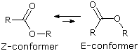
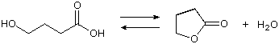
ΔHº = +1.08 kcal/mole
ΔHº = +1.10 kcal/mole
ΔSº = +13.9 cal/ ºK mole
ΔGº = –3.1 kcal/mole kcal/mole
Based on the endothermic shift in the lactonization reaction, one might expect it to be a slower and less complete process than intermolecular esterification. In fact, the opposite is true. Pure 4-hydroxybutyric acid is difficult to make and purify, and it tends to lactonize spontaneously and completely once formed. The intramolecular nature of lactonization explains the increase in rate, but does not account for lactone dominance at equilibrium. For this we must consider the free energy change in this lactonization:
ΔGº = +1.1 – (298 * 13.9/1000) = –3.1 kcal/mole
As shown, a large positive entropy factor opposes the unfavorable enthalpy component, yielding an exergonic ΔGº, which corresponds to a Keq =190. Thus, quantitative lactonization of the 4-hydroxybutyric acid should be expected.
A thermodynamic analysis of the lactonization of 5-hydroxypentanoic acid, n=3 in the formulas written below, leads to similar conclusions. Although the strain in the six-membered lactone is slightly higher than that of the five-membered lactone, the ΔGº for lactonization is still exergonic, and all efforts to prepare the hydroxy acid itself have failed. Analogous lactonization of 3-hydroxypropanoic acid, n=1 in the following equations, forms a highly strained four-membered ring, so it is not surprising that this cyclization does not proceed spontaneously. A ΔHº of +23 to 25 kcal/mole testifies to the increased ring strain, and an estimated ΔSº of 40 to 43 cal/ ºK mole does not reduce the enthalpy term by more than 5.5 kcal/mole. Consequently, the ΔGº for lactonization is strongly endergonic at +17 to +19 kcal/mole, and this hydroxy acid will most likely dimerize if forced to react.
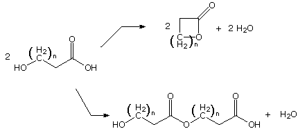
Terminal hydroxy acids having carbon chains longer than six (n > 3 above) may either lactonize or polymerize. With the exception of seven and eight-membered ring compounds, these lactones are not particularly strained, and are able to adopt Z-like ester conformations. The rate of lactonization is small due to the lower probability of conformations in which the hydroxyl and carboxyl groups are near each other in space (a negative entropy factor). If the concentration of hydroxy acid is high, dimerization and polymerization is favored. At low concentrations of hydroxy acid, lactonization becomes competitive.
Reactions which involve the formation of charged atoms and molecules are usually extremely endothermic in the gas phase, but may become spontaneous in certain solvents. If ions are formed from a neutral compound, as when NaCl is dissolved in water, the oppositely charged cations and anions naturally attract each other, so formation of a dispersed homogeneous solution might appear to be energetically unfavorable. To achieve charge separation of ions in solution, two solvent characteristics are particularly important. The first is the ability of solvent molecules to orient themselves between ions so as to attenuate the electrostatic force one ion exerts on the other. This characteristic is a function of the polarity of the solvent. Solvent polarity has been defined and measured in several different ways, one of the most common being the dielectric constant, ε. High dielectric constant solvents such as water (ε=80), dimethyl sulfoxide (ε=48) & N,N-dimethylformamide (ε=39), usually have polar functional groups, and often high dipole moments. When subject to the electric field of an ion, such polar molecules orient themselves to oppose the field, and in so doing they limit its reach. Because of electrostatic attraction between these polar groups, the boiling points of these solvents are generally higher than those of similarly sized nonpolar solvents, such as diethyl ether (ε=4.3) and hexane (ε=1.9). Solvents that have relatively acidic hydrogen atoms (e.g. O-H & N-H) are called protic. Because their functional groups are made up of polar covalent bonds, protic solvents are often polar as well. A list of common protic and aprotic solvents is provided here. The dielectric constants provide a measure of solvent polarity.
Protic Solvents
Aprotic Solvents
Compound
Boiling Pt.
Dielectric Const.
The second factor important in the stabilization of ions, which also resists their intimate recombination, is called solvation. This refers to the ability of solvent molecules to stabilize ions by encasing them in a sheath of weakly bonded solvent molecules, thus somewhat dispersing the electrical charge. Anions are best solvated by hydrogen-bonding solvents; cations are generally solvated by binding to nucleophilic sites on a solvent molecule Two-dimensional diagrams illustrating the primary solvation shell about Na(+) and Cl(–) are shown here. The water dipoles are drawn as red arrows, and partial charges are noted. Additional water molecules are oriented in secondary and tertiary layers about the ions.
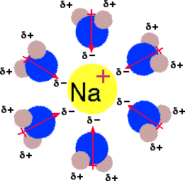
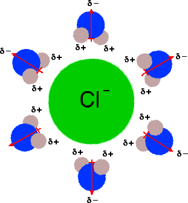
From this description of ion formation in solution, it should be clear that both enthalpy and entropy factors will be important to the outcome of an ionization process. Thus solvation stabilizes and insulates an ion, helping the enthalpic change, whereas the same solvation adds order and structure to the ionic species at the cost of lowering entropy. The outcome of these interactions is discussed below for two typical salts.
NaCl + H2O Na(+) + Cl(-)
ΔHº = +1.3 kcal/mole ΔSº = +10.3 cal/ ºK mole ΔGº = –1.3 kcal/mole
CaF2 + H2O Ca(2+) + 2 F(-)
ΔHº = +1.5 kcal/mole ΔSº = –36.3 cal/ ºK mole ΔGº = +12.3 kcal/mole
Although these two inorganic salts have similar standard enthalpies of solution in water, their standard entropies are quite different. One might expect this entropy change to be positive, since a single molecule in the solid state produces two or more ionic species, accompanied by an increase in system disorder. However this argument fails to consider the ordering of solvent molecules taking place in the solvation of these ions. Because of their greater charge density, small ions and highly charged ions, such as F– and Ca2+, require greater solvation than large or singly charged ions, such as Na+ or Cl–. The overall entropy change for solution of NaCl is positive, reflecting the increased disorder of ionization, but the entropy change for CaF2 solution is strongly negative thanks to the solvation shell structure required by the resulting ions. These different entropy changes are incorporated in the free energy of solution, which is exergonic for NaCl, but endergonic for CaF2. The result is dramatic. Sodium chloride is quite soluble in water at room temperature (36g per 100g water), but calcium fluoride is nearly insoluble (0.0016g per 100g water).
Among the most commonly observed characteristics of reactions are their rates and their equilibrium constants (if observable). In this respect, the influence of substituents on reactivity often provides information about a reaction mechanism , and has been the subject of extensive study. For example, the acidity constants for some substituted benzoic acids range from 3.4 * 10–5 for the para-methoxy compound to 6.7 * 10–3 for the ortho-nitro compound. A similar, but not identical, increase in the rate of base catalyzed ester hydrolysis has been noted, with the para-nitro compound reacting over 103 times faster than the para-methoxy compound.
Now these differences in reactivity may be attributed to perturbations of ΔGº and/or ΔG‡ by a combination of inductive, resonance and steric effects. If the same factors are responsible for the substituent effects in various different reactions, the rates and or equilibria should change in a proportional manner. Indeed, the exponential relationship of free energy to rate or equilibrium constants, as shown on the right, suggests that logarithmic plots should demonstrate this proportionality. To investigate this possibility, logarithms of the rate and equilibrium constants noted above for substituted benzoic acids and their ethyl esters were graphed as shown below. The data points are represented by small circles. It is immediately apparent that the rates and equilibria of the meta and para substituted compounds correlate well (the green line), but the ortho substituted compounds do not. This is not entirely unexpected, since the ortho substituents lie close to the reaction site and each may interact with different intermediates or transition states in many different ways. An analysis of factors that influence the acidity of ortho-substituted benzoic acids is presented elsewhere.
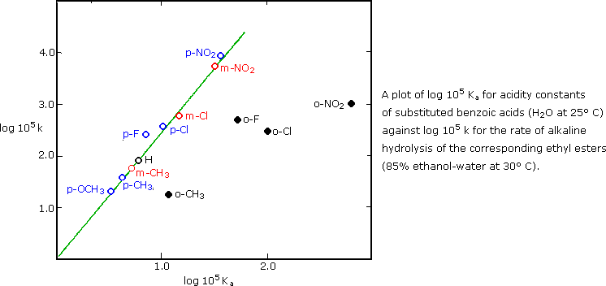
Linear free energy plots of the kind shown here are called Hammett Plots in recognition of Louis Hammett (Columbia University), who first employed this analysis of organic reactions. Hammett selected the Ka's of substituted benzoic acids as a reference system, and defined a substituent constant σ:, based on the log of the ratio of a substituted benzoic acid's acidity (K) to that of benzoic acid itself (Ko).
σ = log(K/Ko)
A table of these σ: constants for different substituents at meta and para locations on a benzene ring is provided here. An examination of the sign and magnitude of these substituent constants is instructive, particularly in context with the influence they have on electrophilic aromatic substitution. Electron withdrawing substituents increase the acidity of benzoic acid (K > Ko) and will therefore have positive σ constants. Electron donating substituents will decrease the acidity, resulting in a negative σ. Inductive and resonance effects do not necessarily act in the same direction, so many σ values are small. Many of the substituent groups listed in the section on the left have negative σ constants and are electron donating. The hydroxy and methoxy substituents change sign depending on their location, illustrating the inductive withdrawal of electrons (meta) and strong resonance electron donation (para). The substituent groups listed in the right hand section are all strongly electron withdrawing, both by inductive and resonance influence. When there is strong resonance interaction between a substituent group and the reaction site, deviations from a Hammett equation plot may occur. For example, the acidity of phenols or anilinium cations is enhanced by para-nitro, cyano and carbonyl substituents to a greater degree than predicted by their σ values. Likewise, electron donating para-substituents such as NH2 and OR facilitate benzyl cation formation to an exceptional degree. These deviations have led to the formulation of specialized σ constants ( e.g. σ - and σ+ among others ) for specific applications. These will not be discussed here.
Substituent
meta σ
para σ
Since the substituent constants are a logarithmic function of benzoic acid Kas, the previous log-log plot of ethyl benzoate hydrolysis rates can be reproduced as a plot of rates against σ. Such a plot is shown below, and the slope of the best fitting correlation line is a characteristic of the specific reaction (and its conditions) for which rate or equilibrium data has been determined. Hammett called this slope the reaction constant, ρ.
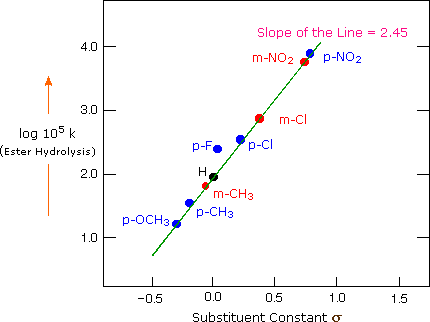
Reaction constants for a large group of reactions involving substituted benzyl or benzoyl functions have been measured. Since the acidity of benzoic acids serves as a reference, the ρ for this reaction is 1.00. Some additional reaction constants are listed in the following table.
Reaction
Equilibrium or Rate
ρ
The following diagram shows rate or equilibrium plots against σ for three different reactions. The slope of each best-fit line provides the ρ for that reaction. These relationships have been consolidated by a simple mathematical formula, known as the Hammett Equation. If the ρ and Ko (or ko) of a reaction are known, then the K (or k) for a substituted analog is easily calculated from the σ for the substituent.
log(K/Ko) or log(k/ko) = σ ρ
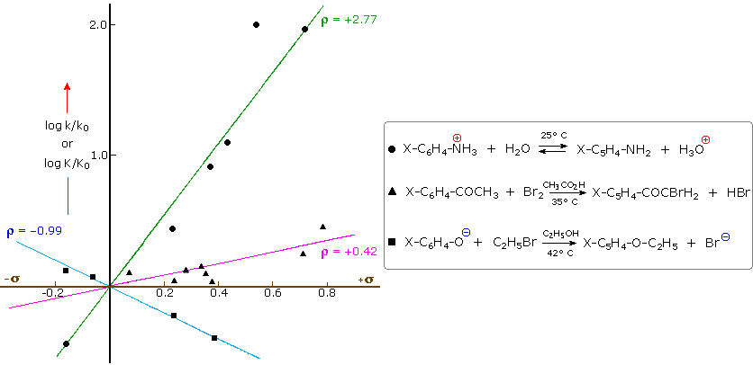
Reaction constants are useful indicators of the electron demands at the reaction site. Anilinium ion acidity, shown by the green line above, has a large positive ρ, indicating enhancement by electron withdrawing substituents. Phenolate anion alkylation, shown by the blue plot has a moderate negative ρ and is retarded by electron withdrawing substituents, but accelerated by electron donation. A ρ near zero, as in the acid-catalyzed benzamide hydrolysis reported in the table, indicates a reaction that is relatively insensitive to meta or para ring substitution. Care must be taken to recognize all reaction variables, since ρ values are sensitive to both solvent and temperature changes. Thus, the ρ for anilinium acidity increases from 2.77 in pure water to 3.57 in 70% aqueous dioxane, both at 25 ºC. Saponification of ethyl benzoate in 85% ethanol at 25 ºC has a ρ = 2.54, which drops to 2.32 at 50 ºC in the same solvent. Interestingly, acid-catalyzed hydrolysis of this ester in 60% acetone at 100 ºC has a rather small ρ = 0.11, similar to that for acid-catalyzed benzamide hydrolysis. Base-catalyzed benzamide hydrolysis in water at 100 ºC has a ρ = 1.1. The near zero ρ for acid-catalyzed ester and amide hydrolysis probably reflects the intermediacy of a conjugate acid species, the concentration of which would be increased by para-electron donating substituents.